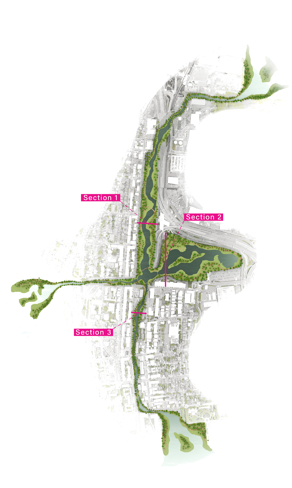
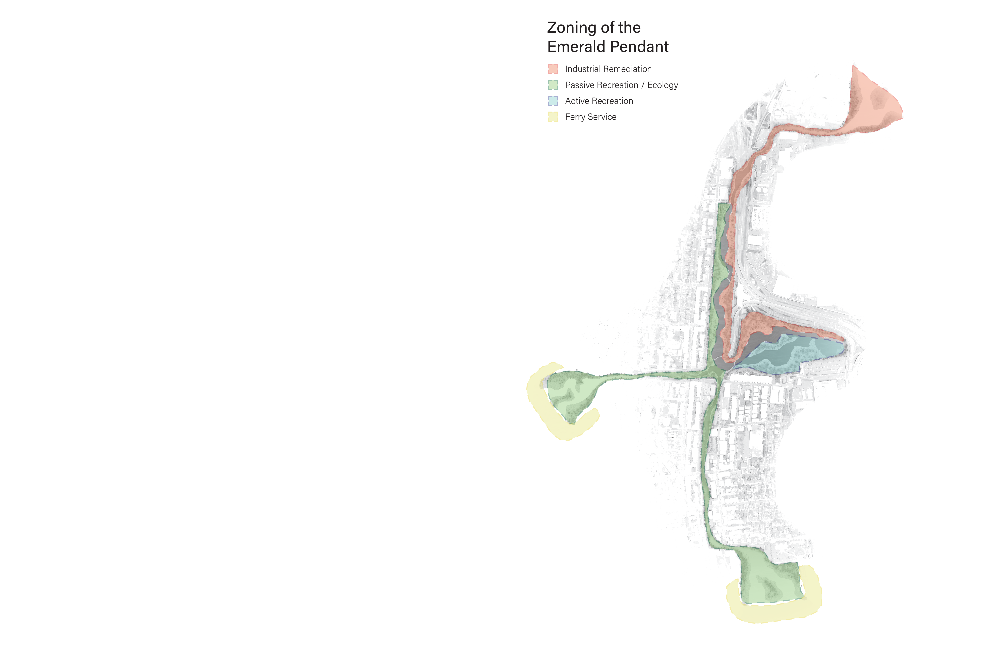
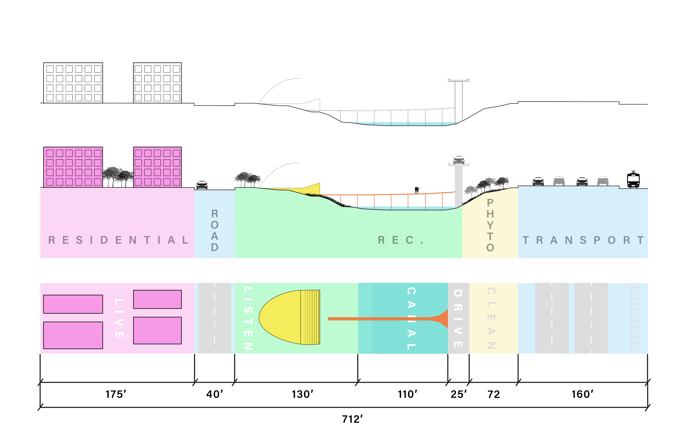
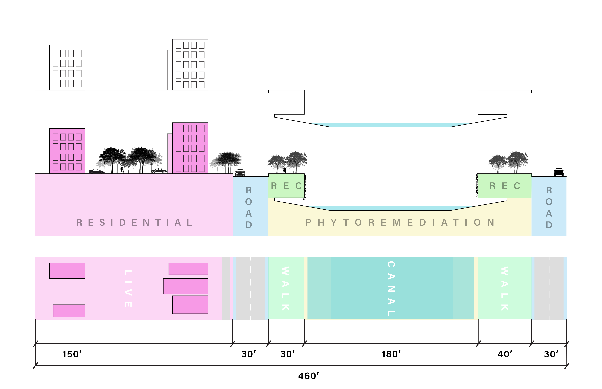
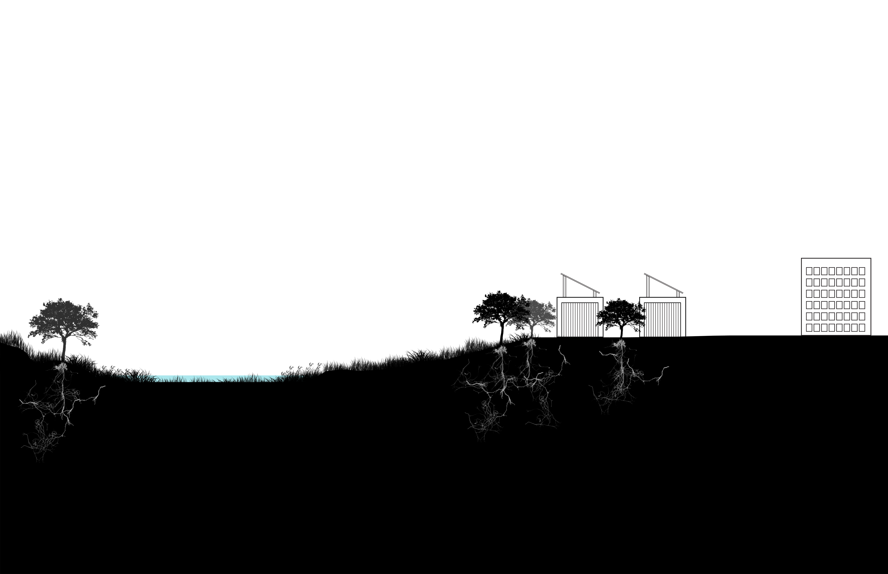
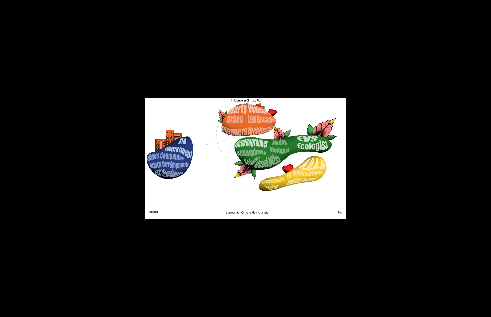
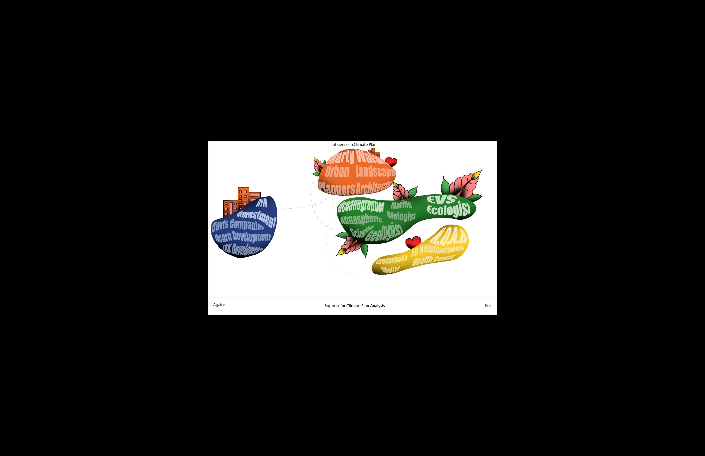

EMERALD PENDANT
The Emerald Pendant Canal will provide an immersive experience for the East Boston Community along with providing ecological services, and protection from rising sea-levels. By taking inaccessible areas throughout East Boston and transitioning the spatial use, it provides a new way to experience the area and learn about the processes taking place.
The Emerald Pendant Canal will focus on restoring ecological functionality to the East Boston Neighborhood as well. By planting native species to the area, this will aim to restore biodiversity, address the urban heat island effect, and act as a stormwater management system. We can also expect to see cleaner air, cleaner water and an overall increase in the general health of residents.


When planning the canal, there is a focus on creating smooth transitions throughout the districts, just as nature has its own through ecotones. Each district will serve its own function such as a commercial district, residential district, and a greenway district. These different zones will have a mix of tactics that all blend together in different ways and lead to evolving programming.




THE ROOTS

 
